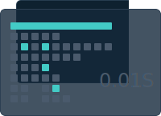

什么是 G2
G2(The Grammar Of Graphics) 是一个由纯 javascript 编写、强大的语义化图表生成工具，它提供了一整套图形语法，可以让用户通过简单的语法搭建出无数种图表，并且集成了大量的统计工具，支持多种坐标系绘制，可以让用户自由得定制图表，是为大数据时代而准备的强大的可视化工具。
G2 的特性
-
简单、易用便于扩展
G2 的图形语法为我们提供了一套非常自由简洁的创建图表过程，可以说是一句话画图；并且 G2 提供了更简单的可视化改变形式，对于使用者来说，用户仅仅改变非常少的配置就可以实现不同图表之间的切换。可视化形式的轻松改变可以帮助数据分析人员更佳容易的找到适用于他的数据的形式，进而发现数据中的规律。
-
强大的数据分析能力
G2 做为 DT 时代强大的数据可视化工具，提供了强大的数据分析能力，这些都是基于 G2 内置的一系列统计方法，大大提高用户数据可视化的效率。
 -

丰富的图表类型
G2 并不是一个特定几个图表的生产库，而是一个绘图工具，提供的是一种自由绘图、组合创造的能力，所有的可视化结果都是由几何图形对象，映射，度量，统计，坐标系等基本图形语法元素排列组合而成，这就决定了用户可以使用这些图形语法元素进行各种各样的组合，创造出属于自己的图表。目前 G2 已经可以绘制出数不清的图表，其中包含了 30 余种常见的图表，还有更多我们都叫不上名字的图表。
快速上手
只需要简单的步骤，即可用 G2 实现一个图表
-
Step 1: 引入 js 文件
<script src="https://as.alipayobjects.com/g/datavis/g2/1.2.1/index.js"></script> -
Step 2: 创建图表容器
<div id="c1"></div> -
Step 3: 创建图表
var chart = new G2.Chart({ id: 'c1', width: 1000, height: 500 }); -
Step 4: 指定数据源
var data = [ {"month":0,"tem":7,"city":"tokyo"}, {"month":1,"tem":6.9,"city":"tokyo"}, ... ]; chart.source(data); -
Step 5: 指定绘制的图形
chart.line().position('month*tem').color('city'); -
Step 6: 绘制图表
chart.render();
让数据可视化变的更简单
立即使用